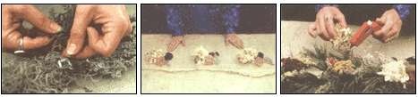

MOTHER'S CHRISTMAS SPECIAL
The secret to decking your halls is walking out your front door.
IN THE FIRST WEEKS OF DECEMBER, as I start bringing boxes of decorations down from the attic, I also begin thinking of what I can make to add to the holiday feel in my home.Along with traditional greens and a pinecone wreath, a natural dried garland is at the top of my list. A nice backdrop for decorations collected over the years, a garland smells terrific, is extremely versatile and long-lasting, and gives a wonderful old- fashioned Christmas look to any home.
I used to decorate the doors, windows, and hallways of my house with long single strands of undecorated pine. After a few years I still liked the look of it, but became intrigued with creating something a little wilder, a little richer looking-a piece that would catch the eye with some color. What I didn't realize at the time was how versatile a natural dried garland would be for all my holiday decorating needs.
If you're anything like me, more items come out of boxes each day as the Christmas season progresses, and arrangements change over the weeks. either to accommodate space or just to let a decoration take a new spot for awhile. A natural garland is very adaptable for these ongoing changes: One 6-foot garland can start as an over-the-door piece, then move to the mantel or be used lengthwise down a door front. And for a Christmas brunch, it makes a lovely centerpiece. The following instructions for one 6-foot garland can be used to make larger or smaller ones-simply double or halve the amount of the supplies on the list below.
Foraging for many of the materials you'll need is a fine way to get out in the winter air and exercise a bit. (If you don't have some item-or if you didn't save some of the drieds from autumn-then purchase them at a crafts store and remind yourself to collect them next fall.) You'll be surprised at how much material you can actually gather in the wintry woods and fields around your home.
Although the supplies listed for this garland may also vary slightly depending on where you live, the basic assembly of the garland remains the same. I'm simply giving you my choice of materials and some alternatives. And while it may turn out differently from what you're used to, the smell will be so intoxicating and the look so Christmasy, you won't be able to pass it by.
The first place to gather, of course, is in the pine grove. (Make sure you wear work gloves and take hand clippers and one or two large buckets.) When I cut, I look for scattered branches so that I won't leave a tree looking- like someone has just hacked it up.
Clip branches about two feet in length and place in your buckets. And while you're out in the woods, pick up some hemlock pinecones, hickory nuts and shells, or any other nut or small cone you might find. As you exit the woods, check the roadside for teasels.
When you've picked all you need, take your pine buckets back indoors and fill them with enough water to cover several inches of the cut ends. Soak them overnight to allow the greens to absorb as much moisture as possible so they'll last all season Iong.
Next, take the nuts and cones home and dry them on a tray in a warm place. Hang-dry the teasels.
Now it's time to unpack the Queen Anne's lace you've dried over the summer. along with the old-fashioned red rose-hips and dried white hydrangeas. Red celosia, lamb's ears, and red and white globe amaranth, which you can grow in your garden and dry, will make striking ac cents. For those of you living in the South, eucalyptus or Spanish moss should be easy to find. For us Northerners, crafts stores carry both. Pick up a spool of wreath wire while you're there, too.
If you who enjoy a touch of sparkle in your creations, spray-painting the hydrangeas, teasels, bay leaves, or yarrow gold or silver is a clever alternative. This is easily done by sticking the flower stems in a piece of Styrofoam and then spraying them from all sides. Bay leaves can be sprayed on one side, dried, then turned to spray on the other side.
With all your supplies gathered, you're ready to start assembling. If your Christmas spirit is a little slow in coming this year, constructing a garland will most certainly turn your feelings around. Smelling the greens, working with all the unique naturals, and enjoying how well your garland is turning out really injects the spirit of Christmas.
Creating decorations with friends is a marvelous way to share and get new ideas. So put on some Christmas music, heat up some potpourri (another marvelous use for some of the natural dried ingredients listed here), and let your creative spirits flow.
Supplies needed: (Alternative materials in parentheses)
• 2 large bunches of dried artemisia
• 6 large branches of fresh white cedar (arborvitae, boxwood)
• 6 large branches of fresh white pine (balsam)
• 6 dried yellow yarrow flower heads
• 6 dried yellow yarrow flower heads spray painted barn red
• 3 ounces of Spanish moss (sphagnum moss)
• 12 dried lambs ears (bay leaves, holly leaves)
• 30 dried Queen Annes lace flowers (yarrow, baby's breath)
• 30 dried red celowia (any red dried)
• 30 dried rosehips (holly berries, canella berries)
• 6 dried hydrangea blossoms (German statice, baby's breath)
• 63-inch pieces of green eucalyptus
•10 white globe amaranth flowers (dried)
• 10 red globe amaranth flowers (dried) (rosebuds,
strawflowers) • 10 hickory shells (any nuts or shells)
• 6 dried teasels (milkweed pods, goldenrod galls)
• 12 small pinecones
• Clippers
• Scissors
• Baling twine
• Small roll of wreath wire
• Hot-glue gun and glue sticks
• Barn red spray paint
• Clear acrylic spray
Makes one 6-foot garland
1. Cut three 7-foot pieces of baling twine. (Your garland will end up being 6 feet in length-the 7-foot twine allows for knots in the ends and for your twine shrinking a bit during braiding.) Knot all three pieces together at one end.
2. Find a hook or a nail in your wall to hang the twine knot from. Then braid the three pieces of twine until you get to the end. Tie a knot in the end. Trim excess twine off both knots and remove from the nail.
3. Take the Spanish moss and stretch the mass evenly the entire length of your braided twine. Place the braid in the middle, on top of the moss. A foot at a time, take your glue gun and apply glue to the front and back of the twine and hold the moss on for a minute. (Careful, watch that you don't get a bum from the glue while doing this-you may want to use gloves.) Continue gluing until the whole length of twine is covered. Now you have a firm base on which to attach your greens. (If you used one piece of twine and no moss, your garland will twirl in a circle when you go to hang it.)
4. Gather your artemisia, white cedar, and white pine. (Just bring the buckets of greens to the table where you're working and pull out as needed, patting dry to keep water off other materials.) Starting with the artemisia, cut three 4-inch pieces off the ends of the bunch and wrap once around tightly with a 7-inch piece of wreath wire. You should have two long ends sticking out of either side.
You will need 35 each of these bunches of artemisia, white cedar, and white pine to cover your garland base. You may either wrap all bunches in the beginning or wrap each one as you go along-it's your choice.
5. With some or all bunches wired, place a white cedar bunch over one end of the moss braid and wrap two wire ends tightly around the braid until all the wire is wound. Make sure you wrap as tightly as possible or your bunches will swing loose: You're working toward a firm, neat garland. Then take a wired artemisia bunch, place it one-quarter inch past the first wired cedar bunch, fan slightly to the right and attach. Take a white pine bunch, fan it slightly to the left, and attach the wire a little past the artemisia. (You'll soon get a good gauge of how much space to leave between bunches; too much distance between bunches and you'll notice gaps.) All bunches should be facing the same direction.
6. Continue wiring bunches, alternating the artemisia, white cedar, and white pine until you reach the end of the garland. (You may feel as if you'll never finish but I usually end up being pleasantly surprised by how quickly the winding goes).
7. At the end, wire one bunch over the knot, working in the opposite direction you've been going in up till now-this should make both ends of your garland look the same.
8. Find that nail you used for braiding and hang your garland from one end. Stand back and check for any holes or places you might want to trim back a little. Holes are easily filled by taking a piece of green, gluing the end, sticking it into the hole, and making sure it's secure to the braid.
9. Now it's time to glue on your flowers, nuts, and berries. The easiest way to do this is to remember that your garland is six 1-foot sections. Your aim is space out your drieds in six equidistant groups. To do this, lay your garland out the length of your table. Starting with the red, place all six yarrow heads evenly right alongside your garland; then take your lamb's ears and place two by each yarrow piece; next, the Queen Anne's lace, then the rosehips, until all your accent pieces are distributed in the six groupings.
10. Now, working with your first group of drieds, carefully arrange your yarrow, hydrangea, and lamb's ears within the first foot section of your garland, using all the drieds for that section. (See photo for my arrangement but feel free to create your own.)
After the flowers are arranged to your liking, glue the 1-foot section of drieds in place, making sure that the stems of larger items (yarrow, teasels) get glued to the base.
11. Create the same arrangement five more times down the garland and glue each section. Now stand back and take a good look at your work. Your eyes should travel easily down the garland with equal spacing and repetition of design. If you catch a hole or a missing color, just make corrections until the garland looks full.
12. Spray dried flowers, nuts, and berries with a clear acrylic spray for added shine and moisture protection.
After you've finished decorating your garland, it's time to decide which way you're going to use it. To hang, make a small loop on the back of the braid with wreath wire and use a sturdy nail.
When it's time to store, place the garland carefully in a box and tuck tissue paper all around. You may have to replace some of the drieds next year, but any loose items can be fixed with a glue gun quite easily. The fresh greens should keep just fine as long as you remember to use long-lasting ones like white pine, white cedar, arborvitae, balsam, or boxwood. Beware of hemlock and spruce, as they tend to dry out quickly.
And remember, if by February it's time for the garlands to be replaced by other decorations, think about your front porch. Hung vertically, just next to the door (as long as it's not in direct rain or wind), it adds a great touch.
Editors note: Susi Jacobson has foraged, created, and sold her natural designs for eight years in Munster, PA, alongside woodcarver Tom McCarty and their daughter Holly. A teacher she has written A Country Woman's Guide to Drieds. She can be contacted at Rd. 1, Box 597, Munster, PA 15938.
|
PHOTOGRAPHS ? GEORGIA O'BRIEN Above: A close-up of a completed section. L-F: Tying the bundled drieds onto the base...Spacing out the bunches before gluing. Fastening the goodies in lace with a glue gun. |
 |
|